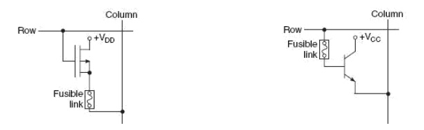

Clk | S | R | \(Q_{n+1}\) | \(\overline Q_{n+1}\) | Operación |
↑ | 0 | 0 | \(Q_n\) | \(\overline Q_n\) | No cambia |
↑ | 0 | 1 | 0 | 1 | RESET |
↑ | 1 | 0 | 1 | 0 | SET |
↑ | 1 | 1 | X | X | Indeterminado |
Resto | X | X | \(Q_n\) | \(\overline Q_n\) | No cambia |
Sistemas Digitales (2ª Parte)
Transparencias en Formato PDF
Indice
Tema 7 : Circuitos Secuenciales
Introducción a los Sistemas Digitales Secuenciales
Controlador Digital de un Ascensor
Unidades de Memoria: Biestables
Tipos de Biestables
Tipos de Biestables
Símbolos de los biestables
S-R, J-K, D, T.
Sincronismo con la pendiente + ó - del reloj.

Cronogramas: Señales binarias de escritura y lectura de biestables
Controlador del Ascensor para 2 plantas
C. Ascensor: Diagrama de estados
C. Ascensor: Diagrama de Bloques Mealy

C. Ascensor: Diagrama de Bloques Moore

C. Ascensor: Transición entre estados
C. Ascensor: Diagrama de estados Moore

C. Ascensor: Diagrama de estados Mealy
C. Ascensor: Codificación
C. Ascensor: Tablas de Estados, Excitación de Biestables y Salidas
C. Ascensor: Tablas de Estados, Excitación de Biestables y Salidas

C. Ascensor: Tablas de Estados, Excitación de Biestables y Salidas
C. Ascensor: Tablas de Estados, Excitación de Biestables y Salidas
C. Ascensor: Tablas de Estados, Excitación de Biestables y Salidas
C. Ascensor: Ecuaciones Lógicas
C. Ascensor: Biestables con entradas asíncronas
A los biestables se les puede añadir dos entradas más para realizar el PRESET (escribir un 1) y el RESET (escribir un 0) en cualquier momento (asíncrona).

C. Ascensor: Reset
C. Ascensor: Esquema Eléctrico

C. Ascensor: Descripción VHDL
Descripción VHDL: Síntesis de Circuitos con Memoria.
C. Ascensor: Descripción VHDL de la Entidad
C. Ascensor: Descripción VHDL de la Arquitectura tipo RTL: Descripción del Esquema Electrico (Memoria y Sincronismo)
Descripción VHDL de los biestables JK con entrada asíncrona de reset.
C. Ascensor: Descripción VHDL Completa
C. Ascensor: Descripción VHDL de la Arquitectura tipo BEHAVIORAL
C. Ascensor: Descripción VHDL de la Arquitectura tipo BEHAVIORAL
C. Ascensor: Descripción VHDL de las Transiciones y de la Salida
C. Ascensor: Descripción VHDL de la Memoria
C. Ascensor: Descripción VHDL de la Memoria
C. Ascensor: Descripción VHDL Completa
Secuenciadores Digitales
Ejemplo 2b Transparencias: Diagrama Secuencia de Estados MEALY

Ejemplo 2b Transparencias: Codificación Entradas, Salidas, Estados
Ejemplo 2b Transparencias: Tablas de Transiciones, Salidas, Excitación

Ejemplo 2b Transparencias: Diseño Circuitos de Excitación y de Salidas

Ejemplo 2b Transparencias: Diseño Circuitos de Excitación y de Salidas
Registros: Introducción
Registros: Esquema
Registros de Desplazamiento: Introducción
Registros de Desplazamiento: Introducción
Registros de Desplazamiento: Estructura con Flip-flops
Conexión de los Flip-Flops en cascada o anillo: conectar salidas Q con entradas del flip-flop contiguo

Borrado → entradas clear asíncronas
SHIFT: Desplazamiento síncrono→ cada flanco de reloj
Circuito Escritura:
serie: shift :set-reset del primer flip-flop
Lectura:
línea salida serie
bus de salida Q
Registros de Desplazamiento: Tipos
Registros de Desplazamiento: Entrada Serie/Paralelo - Salida Serie/Paralelo
Registros de Desplazamiento: Entrada Serie/Paralelo - Salida Serie/Paralelo
Registros de Desplazamiento: Diseño Entrada S/P y Salida S/P
Registros de Desplazamiento: Diseño Entrada S/P y Salida S/P
Registros de Desplazamiento: Diseño Entrada S/P y Salida S/P

Registros de Desplazamiento: 74166
Registros de Desplazamiento: hacia la IZDA
Registros de Desplazamiento: Ejercicio
Registros de Desplazamiento: Carga de la entrada de datos paralela de forma SINCRONA: Ejercicio
Registros de Desplazamiento: Carga de la entrada de datos paralela de forma SINCRONA: Ejercicio
Registros de Desplazamiento: Carga de la entrada de datos paralela de forma SINCRONA: Ejercicio
Esquema de Bloques

SH/LOAD : desplazamiento/carga
CLK : reloj externo
P : entrada de datos paralelo \(P_3P_2P_1P_0\) del registro
D : entrada de datos Síncrona \(D_3D_2D_1D_0\) de los 4 Flip-Flops
clock : entrada de sincronismo de los 4 Flip-Flops
Q : salida \(Q_3Q_2Q_1Q_0\) de los 4 flip-flops
Registros de Desplazamiento: Carga de la entrada de datos paralela de forma SINCRONA: Ejercicio
Registros de Desplazamiento: Carga de la entrada de datos paralela de forma SINCRONA: Ejercicio
Registros de Desplazamiento: Registro Universal (bidireccional) de 4 bits : 74194
Registros de Desplazamiento: Registro Universal (bidireccional) de 8 bits : 74299
Registros de Desplazamiento Rotacional
Contadores: Introducción
Contadores: Ejemplo Contador Ascendente Módulo 8
Secuencia: 0,1,2…7,0,…7,0,…
8 valores → 3 bits → 000,001,…,111,000,…
Estructura: 3 celdas biestables y una señal de reloj → Valor de la cuenta: Salida Q2Q1Q0
Cronograma

Observar: el valor de la cuenta, el sincronismo, la relación de frecuencias entre las salidas
Características Temporales de los Biestables Flip-flops
Tiempo de Retardo ó Propagación(Delay) : Desde que se activa el flanco del reloj para la escritura hasta que se estabiliza la nueva salida Q del biestable. Tiempo de propagación del biestable : \(t_{pb}\)
Tiempo de Mantenimiento (Hold): El tiempo que debe de permanecer estable la entrada desde que se activa el flanco del reloj : \(t_{h}\)
Tiempo de Establecimiento(Set-Up) : El tiempo que debe de permanecer estable la entrada antes de que se active el flanco del reloj : \(t_{su}\)

Circuitos Secuenciales → Frecuencia Máxima del Reloj
Contadores: Asíncronos
Contadores: Asíncronos → Cronograma
Cronograma real teniendo en cuenta los retardos \(t_{pb}\) → Propagation Biestable delay

El diseño del contador se basa en el CRONOGRAMA
Q0 conmuta en el flanco de subida de CLK
Q1 conmuta en el flanco de bajada de Q0
Q2 conmuta en el flanco de bajada de Q1
Conclusión
conmuta en el flanco → JK=11
flip-flops por flanco positivo
flanco negativo de \(Q_0\) → flanco positivo de \(\overline Q_0\)
Contadores: Asíncronos → Diseño
Resultado:

Contadores: Asíncronos → Frecuencia Máxima
Contadores: Asíncrono Ascendente Módulo 10
Estructura: 4 celdas → Cuenta 0000-0001-…-1111
Un contador con 4 celdas es de Módulo 16, por lo que es necesario detectar el valor de cuenta "9" y que el valor siguiente no sea "diez" sino "cero".
Una solución posible es que en el flanco positivo siguiente a la transición 8→9 (flanco negativo) se realice la transición 9→15, por lo que en el siguiente flanco negativo la transición será 15→0.
Al llegar a 9 ("1001") ponemos el contador a 15 ("1111) seteando los dos biestables que están a cero → Q1 y Q2

\(G=Q_3 \cdot Q_0\) → sincronismo con clk=1 → \(G=Q_3 \cdot Q_0 \cdot CLK\)
lógica negativa → \(G= \overline {Q_3 \cdot Q_0 \cdot CLK}\)
Q3Q2 | 00 | 01 | 11 | 10 |
00 | 0 | 0 | X | 0 |
01 | 0 | 0 | X | 1 |
11 | 0 | 0 | X | X |
10 | 0 | 0 | X | X |
Contador Síncrono: Introducción
Contador Síncrono: Contador Ascendete Módulo 8
Contador Síncrono: Ejemplos
Contador Johnson 4 bits
Contador Johnson 4 bits
Contador Johnson 4 bits
\(J_0=Q_1\)
\(K_0= \overline{J_0} = \overline{Q_1}\)
\(J_1=Q_2\)
\(K_1= \overline{J_1} = \overline{Q_2}\)
\(J_2=Q_1\)
\(K_2= \overline{J_3} = \overline{Q_3}\)
\(J_3=\overline Q_0\)
\(K_3= \overline{J_3} = Q_0\)
Las celdas 0,1 y 2 están en anillo y la celda 3 en anillo cruzado o invertido

Contador en anillo Módulo 2
Cuenta Q1Q0: 10 → 01
Se observa que si desplazamos hacia la derecha y la última celda rota da como resultado el contador → contador en anillo rotacional

Qué ocurriría si debido a interferencias el contador entra en el estado 00 ó 11 que NO forman parte contador → bloqueo!!
Solución anti-bloqueo: detectar un estado de bloqueo y provocar una transición al estado inicial escribiendo mediante las entradas asíncronas.
Contador en anillo Módulo 2
Tema 8: Circuitos Digitales Integrados. Familias Lógicas.
Familias Lógicas: Hoja de características eléctricas
Transistor MOSFET
Transistor MOSFET
Inversor CMOS
Familias Lógicas: Función de transferencia
Familias Lógicas: Compatibilidad de los niveles de Tensión.


X>0 → \(V_{ILmax_1} > V_{OLmax_2}\)
Y>0 → \(V_{OHmin_1} > V_{IHmin_2} \)
Familias Lógicas: Fan-out
Familias Lógicas: Ruido y Márgenes de Ruido.
Familias Lógicas: Retardo de Propagación
Familias Lógicas: Ejerciciio 3.3, Compatibilidad
Familias Lógicas: Ejercicio 3.3, Fan-Out
Familias Lógicas: Ejercicio 3.3, Noise Margin
Tema 9: Memorias.
Introducción
Introducción
Tipos de Memorias
Tipos de Memorias
Registros
Memoria volátil de baja capacidad y alta velocidad → biestables, flip-flops
Aplicación: Bancos de registros de la CPU y de los Controladores de los periféricos.

Random Access Memory (RAM)
Dinamyc RAM (DRAM)
Dinamyc RAM (DRAM)
Static RAM (SRAM)
RAM: memoria volátil
WL (Word Line) y BL (Bit Line)
La celda de memoria está formada por 4 transistores MOSFET para memorizar un bit y 2 transistores MOSFET de acceso al bit.
La estructura totem-pole de 2 transistores forman un inversor digital. Luego la celda de memoria son dos inversores realimentándose.
Es la tecnología que utiliza la memoria cache: tiene el inconveniente de que una celda ocupa mucha área de Silicio pero tiene la ventaja de poder escribir/leer a alta velocidad

Read Only Memory (ROM)
Programable ROM (PROM)
Memoria no volátil
Los fusibles quemados de las bases de los transistores BJT en abierto dejan el BJT abierto y los fusibles sin quemar dejan el BJT en cortocircuito.
Se puede escribir más de una vez, pero muy de vez en cuando y lo puede hacer un administrador → Ejemplo: el programa del ordenador de abordo de un coche, de un avión, de un tren, etc …


Proceso de Lectura
lanzamos la dirección (Address) A1A0 → se Decodifica y activa una de las 4 líneas de palabra (WORD LINE)
Los transistores seleccionados:
si están ON conectan la línea de datos D o BIT LINE a Vcc → 1
si están OFF la línea BIT queda conectada a masa → 0
Programable ROM (PROM)
Erasable PROM (EPROM)
Transistor MOSFET con puerta flotante : FGMOS
Float Gate MOSFET: Es un MOSFET con doble puerta, una de ellas flotante ( rodeada de material aislante) y la otra conectada al terminal de puerta. Si se carga el electrodo flotante la tensión umbral \(V_T\) aumenta de \(V_{T1}\) a \(V_{T2}\)
Se puede CARGAR la puerta flotante del transistor de tal forma que si la tensión del terminal de puerta \(V_{T1} < V_G < V_{T2}\) el estado del transistor es OFF ya que se impide a la puerta terminal crear el canal. → bit 0
Si se DESCARGA la puerta flotante y \( V_G > V_{T1}\) → se crea el canal y el transistor está en ON → bit 1
Esto permite tener al transistor FGMOS en estado ON u OFF de forma no volátil. Se puede PROGRAMAR el estado del FGMOS ON/OFF eléctricamente múltiples veces → CELDA DE MEMORIA

Electrically Erasable PROM (EEPROM)
FLASH
FLASH-NOR

Todas las celdas están en PARALELO: un terminal en bit-line y el otro a masa
Se puede acceder directamente a cada celda.
Programación
Antes de escribir los '0' es necesario que estén todas las celdas a '1' → borrado previo
Borrar la memoria significa descargar todas las puertas flotantes. Al borrar las celdas una a una el borrado es lento y por lo tanto esto ralentiza el borrado previo de cada programación.
En cambio la posibilidad de acceder directamente a las celdas en paralelo hace que la lectura sea rápida
Aplicación → programa BIOS: se ejecuta nada más arrancar la computadora
los programas permanecen aunque la computadora este apagada
su actualización no es frecuente : no importa una escritura lenta
interesa que el arranque sea rápido: lectura rápida
FLASH-NAND
Semiconductor Solide Device (SSD)
Hard Disk (HD)
Compact Disc (CD)
Tema 10: Dispositivos de Lógica Programable (PLD).
Introducción
Introducción
Codificadores ROM Programables: Matrices AND y OR Programables
Buses de los Esquemas : simplificación del dibujo de líneas paralelas
Codificadores ROM Programables: Matrices AND y OR Programables
Codificadores ROM Programables: Matrices AND y OR Programables
Dispositivos de Lógica Programable (PLA)
Matrices lógicas de puertas AND programables (PAL)
Matrices lógicas genéricas (GAL) con macroceldas (OLMC)
Buffer Triestado
Dispositivos de lógica programable complejos (CPLD)
Look-Up Table
Dispositivos de lógica programable FPGA
Field Programmable Gate Array (FPGA)
Field: programmable en campo → fuera de la fábrica → en el propio entorno donde se está utilizando.
Continua aumentando el nivel de integración y al mismo tiempo hay un cambio en la arquitectura del dispositivo respecto a los CPLD
Los bloques lógicos están formados con una memoria Look Up Table (LUT) de 4 palabras , un flip-flop y un multiplexor, es decir, se simplifica la arquitectura del bloque lógico